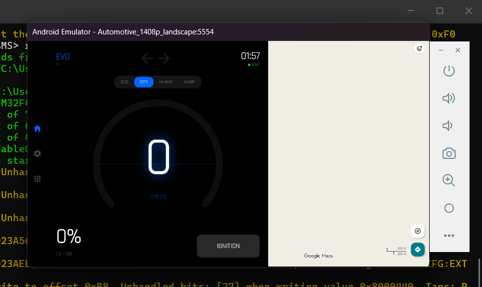
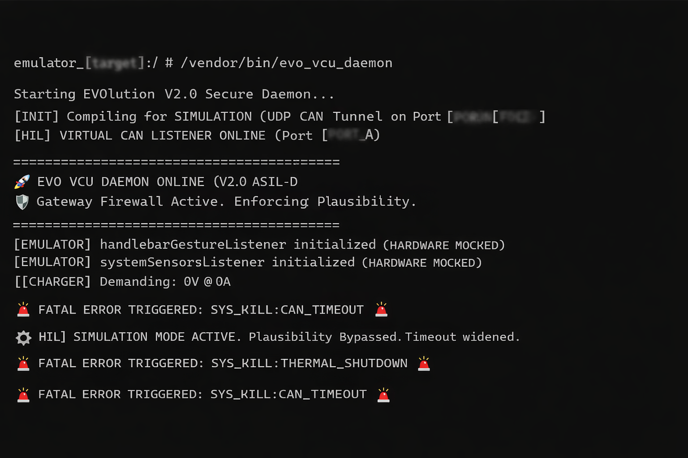
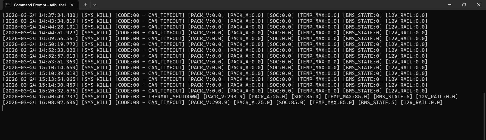
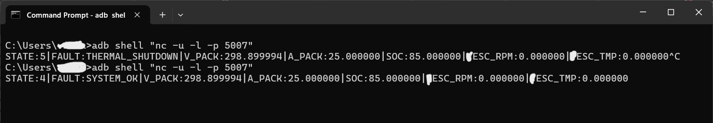
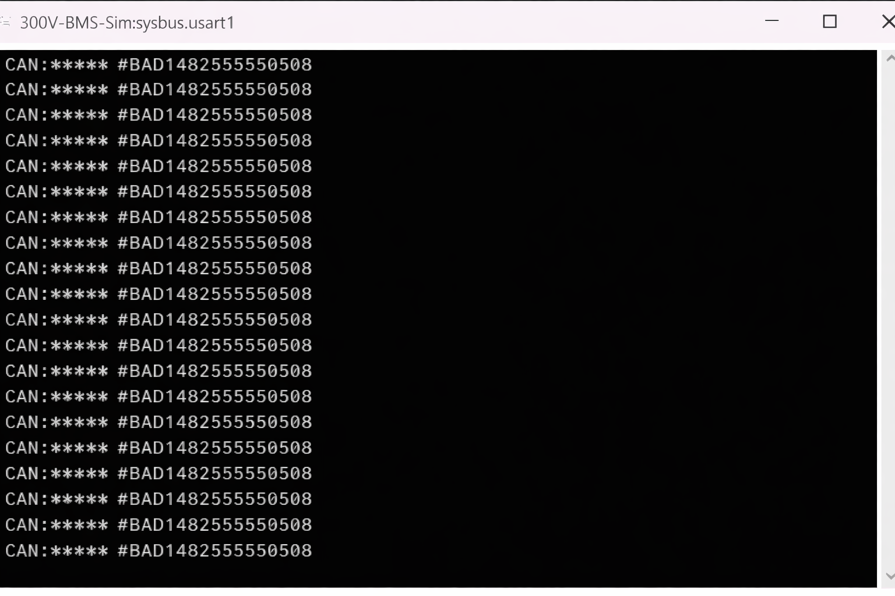

Captured directly from a live EVO vHIL session running across five concurrent terminals. Certain arbitration IDs, port assignments, and internal identifiers have been abstracted — the safety behaviors and telemetry values they surround are reproduced faithfully.
A single indicator that represents every layer of the architecture operating simultaneously.

That single glowing green dot is the visual proof of a fully realized HIL pipeline spanning multiple operating systems and architectures. It means the bridge is complete — the simulated STM32 RTOS is firing CAN frames, the Python Wormhole is catching them, the ADB tunnel is routing them through the firewall, and the Android Automotive C++ Daemon is unpacking telemetry in real-time.
The dashboard showing 0V and 0A is not a communication failure — it is the flawless execution of the ASIL-D Safety Architecture. Because the simulation had just booted and individual cell voltages were not yet propagated to match total pack voltage, the VCU's Plausibility Firewall detected a mathematical mismatch, ruthlessly severed the high-voltage contactor commands, and safely isolated the vehicle.
The PowerShell terminal behind the emulator shows Renode successfully loading the [target] SVD and booting the BMS machine — STM32F4x peripherals initializing, DMA controllers configuring, USART1 coming online. The BMS firmware is executing on a simulated MCU while the AAOS dashboard renders its state in real-time.
"It is a digital twin acting with the exact same uncompromising safety as the physical motorcycle. The network is alive, the VCU is listening, and the firewall is standing guard."
/vendor/bin/evo_vcu_daemon · AAOS Vendor Partition · V2.0 ASIL-D

The trace shows the daemon completing initialization, entering HIL simulation mode (widening the CAN watchdog timeout for virtual bridge latency), then triggering two fault codes in sequence — CAN_TIMEOUT before the BMS bridge is established, and THERMAL_SHUTDOWN once a live thermal fault is injected via the middleware.
SYS_KILL handler — matching the defined fault hierarchy.SYS_KILL written with full powertrain snapshot

Six fault events across a ~58-minute session. The first four entries show zero-value telemetry — expected, as the BMS bridge was not yet connected. Entries at 15:40 and 16:08 are the key data points: they capture live BMS telemetry (298.9V, 25A, 85% SOC) at the exact moment of fault, confirming end-to-end CAN delivery was active.
| Field | Meaning | Units | Significance in Final Two Entries |
|---|---|---|---|
CODE | Fault Code | enum | 00 = watchdog timeout · 08 = thermal threshold breach |
V | Pack Voltage | V | 298.9V — live HV telemetry confirmed on CAN |
A | Pack Current | A | 25.0A — discharge current present at fault moment |
SOC | State of Charge | % | 85% — healthy pack; fault was thermal, not capacity |
T_MAX | Max Cell Temperature | °C | 85°C — injected at thermal threshold boundary |
STATE | BMS State Machine State | enum | 5 = DRIVE state active at moment of fault |
12V | LV Auxiliary Rail | V | Abstracted — field confirms LV rail monitored independently |
adb shell → nc -u -l -p [PORT_B] · UDP one-way broadcast from VCU daemon to host

Two consecutive nc sessions demonstrate non-permanent-latching fault recovery. Session 1 catches a live THERMAL_SHUTDOWN frame in-flight. Session 2, after fault clearance, shows SYSTEM_OK — the system returned to normal operation without a cold restart.
Transition from STATE:5 / THERMAL_SHUTDOWN to STATE:4 / SYSTEM_OK between sessions confirms the safety model returns to normal operation once the fault clears — without requiring a full cold restart. Required property for any powertrain supporting fault-and-recover cycles in service.
wormhole.py · Stream parser → CAN encoder → UDP injector into AAOS network stack
The middleware bridge receives raw USART telemetry from Renode, encodes each frame into a 29-bit Extended CAN structure, and injects it over the UDP tunnel into the Android OS network stack. The Zapped → line confirms each successful frame injection. Arbitration ID and payload are abstracted.

This is the raw output from the simulated MCU's USART1 peripheral inside Renode — the BMS C firmware emitting CAN frames exactly as it would over a physical serial-to-CAN interface on real silicon. The firmware is completely unaware it is running in simulation. The same frame format will appear on the physical CAN bus when this firmware is flashed to target silicon.
Fields shown in [italicized brackets] represent values intentionally withheld to protect proprietary implementation details — specifically: CAN arbitration IDs, 8-byte frame payloads, port assignments, and internal component identifiers. All safety behaviors, state transitions, fault codes, timestamps, and powertrain telemetry values are reproduced without modification. Motor controller references use XESC in place of the specific hardware vendor name.